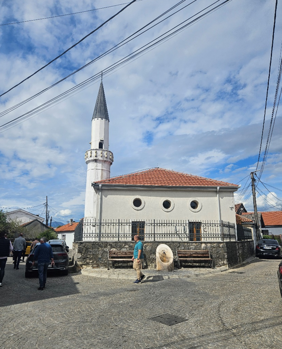
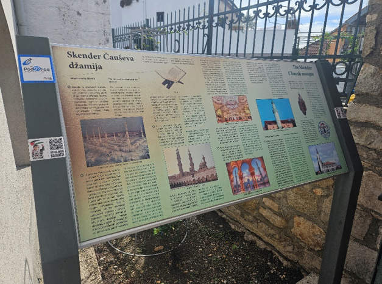

Skender Čauševa – Starodoganjska džamija sagrađena je krajem XV vijeka. Osmanagića džamiju kao i Sahat kulu podigao je hadži Mehmed-paša Osmanagić, krajem XVIII vijeka. U dvorištu džamije nalazi se Turbe graditelja, Mehmed – paše Osmanagića, gdje je i pokopan. U toku Drugog svjetskog rata bombardovanjem je doživjela veliko oštećenje, i u ruševnom stanju je bila sve do 1997. godine kada je temeljno renovirana.
Pocetna Oko vremena nastanka i oko toga ko je osnivač ove džamije dugo je vladala zabuna. Neki je poistovjećuju sa Sultan-Fatihovom džamijom u podgoričkoj tvrđavi, a drugi misle da su je podigli i održavali trgovci iz okolnih starih dućana, te da je otuda i dobila Starodoganjska. Međutim, uvidom u turske popisne deftere i druge dokumente, danas je to moguće rasvijetliti.
Prema turskim izvorima ovu džamiju i jednu tekiju u njenoj blizini sagradio je Skender-Čaus krajem XV vijeka. Pored džamije u tvrđavi, ona je bila jedina džamija u Varoši sve do 1582. godine, kada u defteru susrijećemo popisane i njene službenike: Džamiri Havadže, hatiba i Aliju, sina Hazir Hodže, mujezina. 1z istoga dokenta saznajemo da je osnivač za njihovo održavanje uvakufio svoje posjede zvane ledine u Fundini i Kupus (? necitko).
Kada su ovi vakufi propali, džamiju su održavali trgovci pa je otuda i njeno ime Starodoganjska. U toku II svjetskog rata 1943. godine Podgorica je bombardovana. Varoš je tada doživjela velika -razaranja. Pri tome nijesu bile pošteđene ni džamije, koje su imale velika oštećenja, ova je prošla sa manjim, pa je postojala mogućnost njene opravke.
Sresko Vakufsko mearifsko povjerenštvo u Titogradu je bilo posredno obaviješteno da vlasti namjeravaju džamiju pretvoriti u reonsku prostoriju. Tim povodom se obraća 1slamskom starješinstvu u Narodnoj Republici CG, čije je sjedište bilo na Cetinju i moli da kod mjerodavnih izdejstvuje odobrenje za opravku (akt br. 2 od 11. ~. 1950. godine. U potpisu Šabanadzovic Ćazim, predsjednik). U međuvremenu džamija je preuređena i pretvorena u reonske prostorije. Na ovaj postupak reaguje Vakufsko Mearifsko povjerenštvo u Titogradu i moli Islamsko starješinstvo za Narodnu Republiku Crnu Goru da se zauzme kod nadležnih organa da se džamija oslobodi i preda radi upotrebe kako je to ranije bila, navodeći potrebu muslimana da je materijal za umrle smjesten pod pećinama jer nemaju svojih prostorija (dopis br. 5 od 26. novembra 1950. godine, K br. 1/47,48,49, 50 i 51. u potpisu Bećir F. Šarkić). Sjediste Islamskog starješinstva za Narodnu Republiku Crnu Goru je premješteno iz Cetinja 1952. godine u Titograd, pa je i džamija vraćena Islamskoj zajednici.
Kako je prvobitno izgledala ova džamija nije poznato. Više puta je obnavljana. Tadašnji izgled (prilog fotografija) dobila je 1927. godine. Imala je dva svoda. Posljednja veća opravka izvršena je nakon zemljotresa 1979. godine, kada je u njenoj sanaciji jednim manjim dijelom učestvovala i država, ali je veći dio troškova pao na Islamsku zajednicu, mada se radilo 0 spomeniku kulture pod zaštitom države. Ta sanacija je izvršena 1985. godine.
Na osnovu raspoložive dokumentacije imami ove džamije su bili: Ibrahim Maslić, Edhem Vodopić, Hadži hafiz Lukačević, Hadži Bajro Mučić, Halil Medo Haverić, Mula Ahmed Krnić, Said Oručević, Hadži hafiz Šukrija Bakalović, Halil Seferović, imam u penziji u Starom Baru, Islam Pepić, sada imam u Tuzima, Ibrahim Huseinović, imam u Pečuricama kod Bara., hadzi Saćir Smailović. Sada dužnost imama obavlja Džemo Redžematović.
V) Dvadesetih godina ovoga vijeka vakuf Starodoganjske džamije posjedovao je 21/2 vitla mlina, 21/4 rala zemlje i ralo oranice (u podgoričkoj opštini). Uz to ovom vakufu je pripadalo i 310 dinara (priznanice kod A. Kockića i Huseina Osmanagića). Mutevelija ovog vakufa bio je Mustava Abdagić
Danas ova džamija posjeduje tri lokala od 80 m2 ukupne površine, koje Odbor izdaje pod zakup. Lokali se nalaze u ulici Oktobarske revolucije (Gradić Pejton). Lokali su kupljeni od prodate vakufske zemlje 1972. godine, od Građevinskog preduzeća “Prvoborac” iz H:erceg Novog
Džamiji je pripadala i Skender-Čauševa tekija koja je sagrađena prije džamije, krajem XV vijeka. Za njeno izdržavanje osnivač je uvakufio prihode od dva mlina u selu Šteke.
Na prostoru gdje je danas Nova VaroŠ, bio je vojni logor, a prostor se zvao Livade. Na tom mjestu bilo je i jedno turbe u kome je, prema predanju, sahranjen neki sultanov sestrić, koji je poginuo u borbi sa Piperima.
Pečevi u svojoj istoriji kaže da je to Gazi-Husrefbeg, unuk po krvi Bajazita II i da je poginuo u boju sa pobunjenim Kučima.
) Utroba mu je ukopana u podgoričkim ledinama, a tijelo prenešeno i sahranjeno u Sarajevu. Na dva mjesta mu je podignuto turbe, Ovo turbe muslimani su često posjećivali, čuvali i postovali. Posjete su vršene u različite svrhe, iskazivanja pobožnosti i dobročinstva.
Kada bi neko od muslimana htio da učini neko dobro djelo ili da se iskaje (kefaret) od grijeha, zaklao bi kurbana kod turbeta, meso razdijelio sirotinji, a kožu osušio i darovao turbetu ili prodao u korist turbeta za njegovo izdržavanje ili za plaćanje turbedara čuvara turbeta.
Kada je građena Nova Varoš, turbe je porušeno, a mezar prenešen u harem Skender Čauševe, odnosno Starodoganjske džamije.
U njenom haremu je sjedište Mešihata Islamske zajednice Crne Gore, Odbora Islamske zajednice Podgorica, abdesthana i gasulhana.
Piše: Džemo ef. Redžematović, link